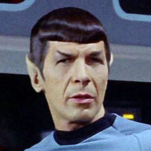

Nie raz zdarzy się konieczność wprowadzenia zmian w tym samym miejscu przez dwóch członków zespołu. Wówczas Git nie będzie mógł z tym sobie poradzić i zwróci konflikt, do rozwiązania przez was.
Użyjcie repozytorium z poprzedniego ćwiczenia kapitana Kirka.
Captain Kirk
 Stwórz brancz feature-kirk-3.
Stwórz brancz feature-kirk-3.
$ git checkout -b feature-kirk-3W pliku stepy.akermanskie.txt w 2 linijce zamień 2 dowolne słowa na ich synonimy.
Zapisz zmiany, zakomituj i pusznij zmiany na brancz zdalny. Przełącznik -u jest konieczny, ponieważ to nowy bracz, którego nie ma jeszcze na zdalnym repozytorium.
$ git add .
$ git commit -m "cpt. Kirk stepy akermanskie cz.3"
$ git push -u origin feature-kirk-3Mr. Spock
Stwórz brancz feature-spock-3.
$ git checkout -b feature-spock-3W pliku stepy.akermanskie.txt w 2 linijce zamień 2 dowolne słowa na ich synonimy.
Zapisz zmiany, zakomituj i pusznij zmiany na brancz zdalny. Przełącznik -u jest konieczny, ponieważ to nowy bracz, którego nie ma jeszcze na zdalnym repozytorium.
$ git add .
$ git commit -m "mr. Spock stepy akermanskie cz.3"
$ git push -u origin feature-spock-3Pobierz wszystkie zmiany ze zdalnego repozytorium. Czas na
code
review zmian Spocka.
$ git fetch originremote: Enumerating objects: 4, done.
remote: Counting objects: 100% (4/4), done.
remote: Compressing objects: 100% (3/3), done.
remote: Total 3 (delta 0), reused 3 (delta 0), pack-reused 0
Unpacking objects: 100% (3/3), done.
From github.com:grazin/repo2
* [new branch] feature-spock-3 -> origin/feature-spock-3Pobierz wszystkie zmiany ze zdalnego repozytorium. Czas na code review zmian Kirka.
$ git fetch originremote: Enumerating objects: 4, done.
remote: Counting objects: 100% (4/4), done.
remote: Compressing objects: 100% (3/3), done.
remote: Total 3 (delta 0), reused 3 (delta 0), pack-reused 0
Unpacking objects: 100% (3/3), done.
From github.com:grazin/repo2
* [new branch] feature-kirk-3 -> origin/feature-kirk-3Przejdź na brancz Spocka feature-spock-3. Przejrzyj zmiany
w dowolnym GUI.
$ git checkout feature-spock-3Przejdź na brancz Kirka feature-kirk-3. Przejrzyj zmiany w dowolnym GUI.
$ git checkout feature-kirk-3Jeśli Kirk zatwierdził twoje zmiany, wróc na swój brancz, żeby następnie zribejzować go i potem go domerdżować do brancza głównego. Zribejzuj swój brancz względem głównego i pusznij.
$ git checkout feature-spock-3
$ git rebase master
$ git push origin feature-spock-3Następnie przejdź na mastera i zmerdżuj swoje zmiany. Pusznij.
$ git checkout master
$ git merge feature-spock-3
$ git push origin masterJeśli Spock zatwierdził twoje zmiany. Najpierw uaktualnij
główny brancz poleceniem git pull.
$ git checkout master
$ git pullTeraz przejdź na swój brancz i wykonaj ribejz. Następnie pusznij zmiany.
$ git checkout feature-kirk-3
$ git rebase masterFirst, rewinding head to replay your work on top of it...
Applying: cpt. Kirk stepy akermanskie cz.3
Using index info to reconstruct a base tree...
M "stepy.akermanskie.txt"
Falling back to patching base and 3-way merge...
Auto-merging stepy.akermanskie.txt
CONFLICT (content): Merge conflict in stepy.akermanskie.txt
error: Failed to merge in the changes.
Patch failed at 0001 cpt. Kirk stepy akermanskie cz.3
Use 'git am --show-current-patch' to see the failed patch
Resolve all conflicts manually, mark them as resolved with
"git add/rm <conflicted_files>", then run "git rebase --continue".
You can instead skip this commit: run "git rebase --skip".
To abort and get back to the state before "git rebase", run "git rebase --abort".Git zgłosił konflikty. Chcesz dowiedzieć się w jakich plikach? Użyj polecenia diff w poniższy sposób:
$ git diff --name-only --diff-filter=U"stepy.akermanskie.txt" Git zgłosił konflikt w pliku stepy.akermanskie.txt. Otwórz ten plik w zwykłym edytorze tekstu.
Razem ze Spokiem manualnie rozwiążcie konflikt.
Plik z konfliktem ma oznaczone skonfliktowane zmiany:
<<<<<<< HEAD zmienona linijka/linijki kodu w branczu względem którego się ribejzujesz ======= zmienona linijka/linijki kodu w branczu który ribejzujesz >>>>>>> komit #1
Rozwiązanie konfliktu polega doprowadzeniu zawartości pliku do ustalonej ostatecznej wersji (już bez znaczników).
Zapisany plik ze zmianami należy oznaczyć jako rozwiązany. Wystarczy wykonać polecenie git add .. Potem upewnij się, że wszsytkie konflikty zostały rozwiązane.
$ git add .
$ git diff --name-only --diff-filter=UJeżeli nie ma, to teraz trzeba dokończyć ribejza
$ git rebase --continueApplying: cpt. Kirk stepy akermanskie cz.3Pusznij teraz ten brancz. Pamiętaj, że zmieniona została historia i trzeba wymusić.
$ git push origin +feature-kirk-3Następnie przejdź na mastera i zmerdżuj swoje zmiany. Pusznij.
$ git checkout master
$ git merge feature-kirk-3
$ git push origin masterUaktualnij swoje lokalne repozytorium o zmiany Kirka.
$ git pull
Spójrzcie teraz każdy u siebie na graf w dowolnym GUI. Powinien wyglądać jak poniżej.